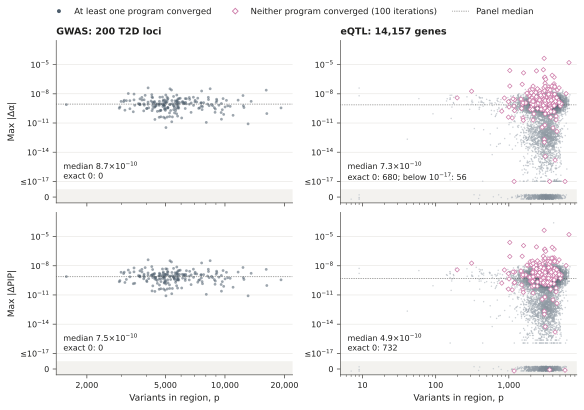
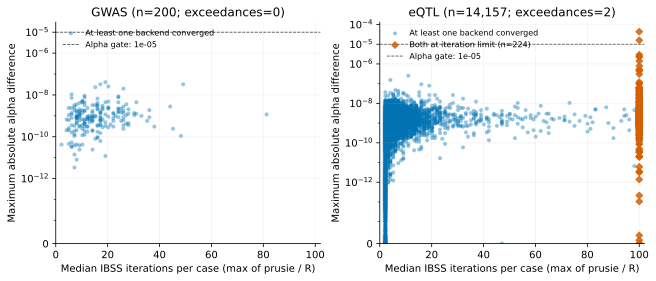
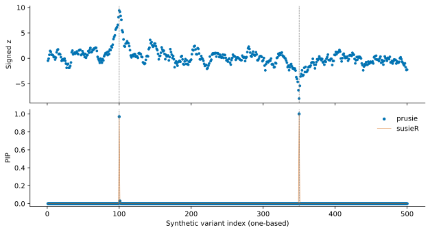

On this page
Numerical accuracy
Numerical comparisons assess how closely prusie's fitted SuSiE posteriors agree
with susieR when both implementations receive the same inputs and fitting
settings. This page compares prusie 0.3.0 with susieR 0.16.6, using the complete
alpha matrix of single-effect posterior inclusion probabilities as the primary
agreement criterion.
The evidence includes fixed-reference checks, fresh susieR fits for FinnGen type 2 diabetes GWAS loci and GTEx Whole_Blood eQTL analyses, and an independent toy example. Results apply to the tested configurations; numerical agreement is separate from the statistical calibration of variant inclusion probabilities and credible sets.
Component posterior validation
Comparisons use susieR 0.16.6, commit
8e56a8e038e989856d106d9ca5175cc664fea9d2, with matched inputs, model settings
and verified variant order. The numerical criterion is a maximum absolute
difference of 1e-5, with rtol=0, across the complete final alpha matrix.
Both matrices must have the same shape and retain their original component rows
and variant columns, including inactive components and components without
credible sets. Every entry must be finite and in , and each row must sum
to one within 1e-10.
Marginal posterior inclusion probabilities (PIPs), credible-set memberships,
posterior moments, variances, Bayes factors, ELBOs, iteration counts and
convergence flags are additional diagnostics. Small differences near component
activity or credible-set thresholds can change the reported summaries even
when alpha passes. The fitting thresholds and stopping tolerances stay at
the specified values. See Computational compatibility
for the floating-point assumptions and full criterion.
The fixed-reference validation covers 184 RSS cases, each tested with
n_threads=1, 2, 4 and 8, and with both overwrite_ld=False and
overwrite_ld=True. All 1,472 case–setting comparisons pass, with a maximum
absolute alpha difference from the fixed R reference of .
Each setting is fitted twice from independently reloaded inputs, giving 2,944
prusie calls. Repeated calls and the saved same-setting prusie comparison arrays
agree bit for bit in alpha. The machine-readable summary
records the settings, errors and identities of these separate R and prusie
references.
These fixed-reference checks use refine=False and are separate from the
fresh-R real-data comparisons and
independent toy example. The results cover the tested
inputs, model settings and platforms; refinement
and stochastic draws across languages require separate validation.
Variant inclusion probabilities
The primary real-data comparison fits FinnGen R13 type 2 diabetes GWAS loci
and GTEx v11 Whole_Blood eQTL analyses on exclusive AMD EPYC 7742 nodes, using the AVX2-capable
native build and fresh susieR 0.16.6. The arrays are a by-product of the formal
timed calls, with no additional fits. R alpha is saved as binary float64.
prusie uses n_threads=1 and refine=False. Both implementations receive
matched summary statistics, LD and model settings; see the
input provenance and
fitting methods.
| Analysis | Cases | Alpha passes / failures / unavailable | Maximum |Δalpha| | Maximum |ΔPIP| |
|---|---|---|---|---|
| GWAS | 200 | 200 / 0 / 0 | 4.05e-08 | 4.05e-08 |
| eQTL | 14157 | 14155 / 2 / 0 | 4.35e-05 | 0.000243 |
The gate remains absolute alpha error ≤ 1e-5, with relative tolerance zero. Iteration-limit exceedances remain failures of this numerical threshold.
The table reports observed maximum absolute differences over the complete returned arrays. Pass/fail status follows the alpha criterion; PIP differences are additional diagnostics. The per-case records give the errors and numerical status of each primary comparison.


The vertical axes use a symmetric-log scale that retains exact zeros. The dashed lines mark the alpha acceptance limit in the top panels. PDF.
| Analysis | prusie iteration-limit cases | R iteration-limit cases |
|---|---|---|
| GWAS | 0 | 0 |
| eQTL | 224 | 224 |
All completed positive timing pairs enter the performance summaries, independently of convergence, alpha agreement and credible-set presence. Per-case records list every status.
Individual exceedances and posterior diagnostics
Every alpha exceedance is listed below. Exceedances remain threshold failures; the predeclared exception applies only when both backends reach the iteration limit without convergence. Any exceedance involving a converged backend is reported separately and prominently. No case is removed from the timing summary because of convergence or numerical outcome.
No alpha exceedance involved a converged backend.
| Case | Setting | Maximum |Δalpha| | prusie: iterations / converged | R: iterations / converged | Both at iteration limit | Disposition |
|---|---|---|---|---|---|---|
| ENSG00000164741.15 | primary | 1.5907202e-05 | 100 / False | 100 / False | True | ACCEPTED_BOTH_NONCONVERGED_EXCEPTION |
| ENSG00000110203.10 | primary | 4.3494803e-05 | 100 / False | 100 / False | True | ACCEPTED_BOTH_NONCONVERGED_EXCEPTION |
The full real-data comparison does not provide error bounds for posterior moments, variances, log Bayes factors or ELBOs. See the posterior field definitions for their meanings and working scales, and iterations and finalization for the relation between recorded objectives and returned arrays.
Iterations and alpha differences
The IBSS sweep repeatedly updates each component's posterior and residuals,
so prusie and susieR accumulate separate floating-point regroupings over
successive sweeps. More sweeps therefore give more opportunity for small
differences to appear, and both backends must stop before the comparison is
anchored. Points below plot each case's maximum absolute alpha difference
against the maximum of its two per-backend median IBSS iteration counts; cases
where both backends reach max_iter=100 without convergence are highlighted.


Among cases where at least one backend converged, errors stay well below the
1e-5 acceptance limit on both panels. GWAS maximum within-case alpha
differences range from (median across 9 one-to-five-sweep
cases) to (maximum across 144 six-to-twenty-sweep cases),
with the across-case maximum . eQTL converged-pair errors
behave similarly: across-case maximum on the full
panel; within-bucket medians rise from (1–5 sweeps,
n=8,886) to (21–50 sweeps, n=181). The Pearson correlation
between the two per-case medians and of the within-case maximum
alpha difference is 0.22 on GWAS and 0.26 on eQTL. The trend is weak:
regrouped operations accumulate slowly with sweep count, and most of the
case-to-case spread comes from how closely and the active
components are conditioned.
Both panels keep every converged-pair comparison below . The
two recorded eQTL exceedances only appear when both backends stop at
max_iter=100 without convergence; their maximum absolute alpha differences
( and ) are the two highest points on
the eQTL panel. The user acceptance applies to this both-nonconverged
condition only; exceedances involving a converged backend remain gate failures.
The per-case records retain the
backend-specific iteration counts, convergence flags and alpha errors used
in the figure; the longer iteration-limit diagnostic
revisits the eQTL exceedances with max_iter=1000.
Credible sets
The real-data fits construct credible sets
with target posterior mass coverage=0.95 and minimum absolute LD correlation
min_abs_corr=0.5.
| Analysis | Backend | Cases with recorded counts | Credible sets (first retained fit) | Empty-CS cases |
|---|---|---|---|---|
| GWAS | prusie | 200 | 1139 | 7 |
| GWAS | susieR | 200 | 1139 | 7 |
| eQTL | prusie | 14157 | 14207 | 5049 |
| eQTL | susieR | 14157 | 14207 | 5049 |
This full-panel campaign records set counts; it does not compare full member identities, returned mass or purity. The separate packaged example and regression suites check those quantities.
Matching aggregate counts do not establish agreement of individual sets. Credible-set presence also does not establish convergence. Interpret the counts alongside the recorded convergence flags and the credible-set fields.
Independent toy example
The packaged toy example checks numerical agreement on a single simulated
dataset, using a separate susieR reference. Load its summary statistics and LD
with prusie.load_example().
The independent 500-variant toy example converged in 3 iterations and returned 2 credible sets. Its maximum absolute PIP difference from the separately generated susieR 0.16.6 reference was 1.66e-10.


The dashed lines mark the simulated nonzero effects. Credible-set memberships also match the R reference for this example. See the toy example tutorial for the simulation method, fitting options and packaged reference, and the vector PDF.
Reproduce the comparisons
The benchmark summary and full per-case records provide numerical errors and convergence diagnostics. The 24 adopted earlier-protocol cases retain their saved final arrays from retained repeat seven; other cases save the arrays from retained repeat three. These repeat identities are explicit. Follow the regeneration instructions to rebuild the tables and figures from retained measurements without refitting.
The offline toy checks compare a prusie fit with the packaged R reference. The fresh susieR comparison fits both implementations using matched inputs and settings. Repeating the real-data comparisons requires the separately obtained association summaries and LD, with the same variant order and fitting settings. Preserve the frozen inputs and reference files when running new checks.
Longer iteration-limit diagnostic
The separate local workstation supplement selected all 224 GTEx genes for
which both backends had reported nonconvergence at max_iter=100. Each backend
was called once per gene with max_iter=1000, with every other setting and the
original local inputs unchanged. This diagnostic does not change the default,
formal benchmark settings, acceptance criterion or original classification.
Both backends converged for 102 genes and returned nonconverged fits for 83. For the other 39 genes, both stopped with the existing prior-variance guard; those calls did not return fits and have no final iteration count. There were no discordant backend outcomes. The guard message suggests inconsistent summary statistics and LD as one possible cause; this supplement did not establish that cause.
Among the 185 returned pairs, the largest absolute alpha difference was ; among the 102 both-converged pairs, it was . For ENSG00000110203.10, both still reported nonconvergence after 1,000 iterations, with maximum alpha difference . This does not replace the original 100-iteration exceedance or its recorded user disposition.
The supplement records
list every gene, returned iteration count, numerical difference or guard
rejection. The selected gene list has SHA-256
8ee34a2840903be09fa500241d646e508b1ddbd217f7996f07c59caadd125e47.